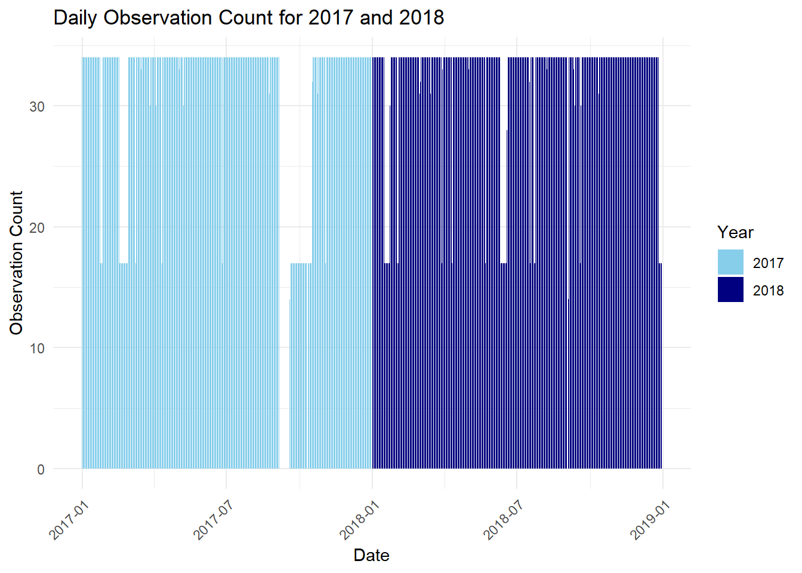
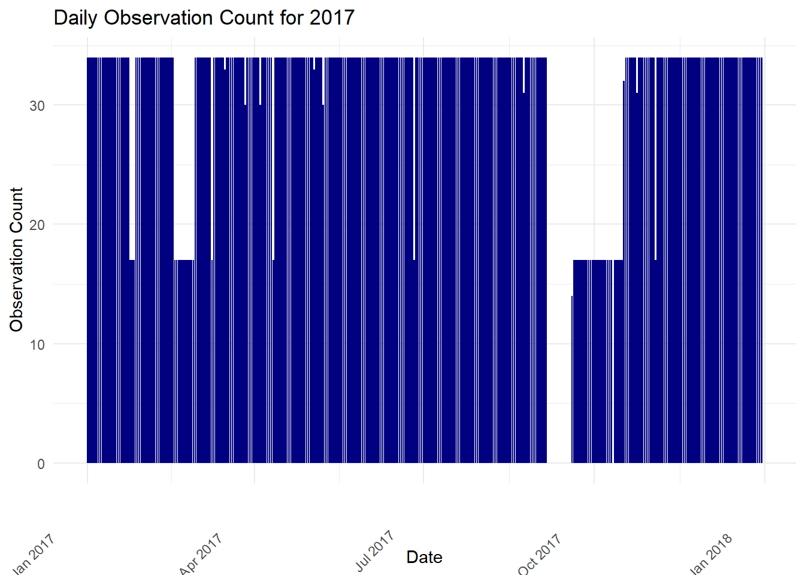
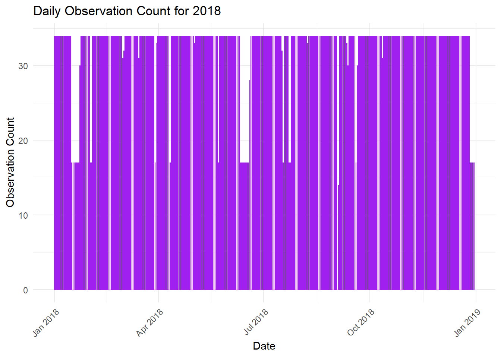
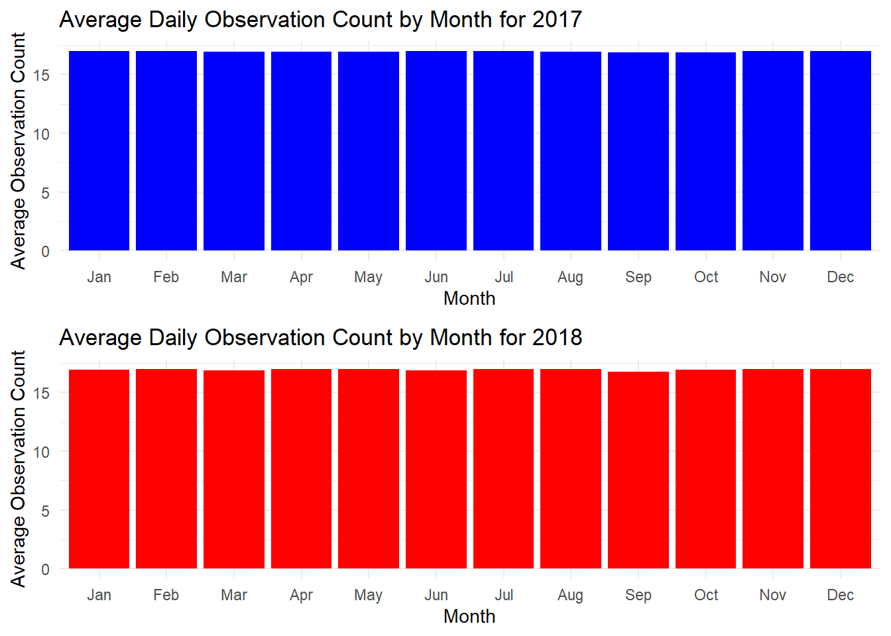
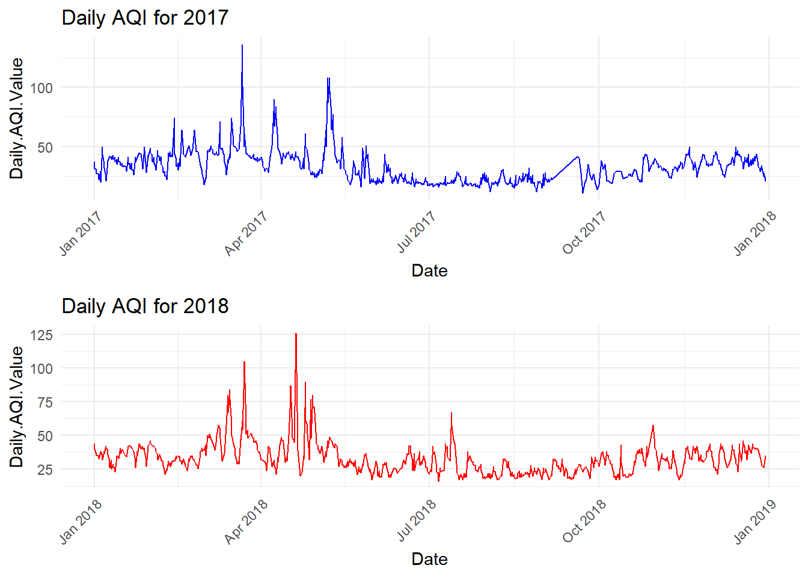

library(ggplot2)
library(dplyr)
Attaching package: 'dplyr'The following objects are masked from 'package:stats':
filter, lagThe following objects are masked from 'package:base':
intersect, setdiff, setequal, unionlibrary(readxl)library(ggplot2)
library(dplyr)
Attaching package: 'dplyr'The following objects are masked from 'package:stats':
filter, lagThe following objects are masked from 'package:base':
intersect, setdiff, setequal, unionlibrary(readxl)data_2017 <- read.csv("Hurrican_Irma_2017_Cleaned_2.csv")
data_2018 <- read.csv("Hurrican_Irma_2018_Cleaned_2.csv")data_combined <- rbind(data_2017, data_2018)
data_combined$Date <- as.Date(data_combined$Date, format="%m/%d/%Y")data_combined$Year <- format(data_combined$Date, "%Y")daily_counts <- data_combined %>%
group_by(Date, Year) %>%
summarize(Daily_Obs_Count = sum(Daily.Obs.Count, na.rm = TRUE))`summarise()` has grouped output by 'Date'. You can override using the
`.groups` argument.ggplot(daily_counts, aes(x = Date, y = Daily_Obs_Count, fill = Year)) +
geom_bar(stat = "identity", position = "dodge") +
labs(title = "Daily Observation Count for 2017 and 2018",
x = "Date",
y = "Observation Count") +
scale_fill_manual(values = c("2017" = "skyblue", "2018" = "navyblue")) +
theme_minimal() +
theme(axis.text.x = element_text(angle = 45, hjust = 1))
##Load necessary libraries
library(ggplot2)
library(dplyr)data_2017 <- read.csv("Hurrican_Irma_2017_Cleaned_2.csv")
data_2018 <- read.csv("Hurrican_Irma_2018_Cleaned_2.csv")data_combined <- rbind(data_2017, data_2018)
data_combined$Date <- as.Date(data_combined$Date, format="%m/%d/%Y")data_combined$Year <- format(data_combined$Date, "%Y")data_2017_only <- filter(data_combined, Year == "2017")
data_2018_only <- filter(data_combined, Year == "2018")daily_counts_2017 <- data_2017_only %>%
group_by(Date) %>%
summarize(Daily_Obs_Count = sum(Daily.Obs.Count, na.rm = TRUE))p1 <- ggplot(daily_counts_2017, aes(x = Date, y = Daily_Obs_Count)) +
geom_bar(stat = "identity", fill = "navyblue") +
labs(title = "Daily Observation Count for 2017",
x = "Date",
y = "Observation Count") +
theme_minimal() +
theme(axis.text.x = element_text(angle = 45, hjust = 2))p2 <- ggplot(data_2018_only, aes(x = Date, y = Daily.Obs.Count)) +
geom_bar(stat = "identity", fill = "purple") +
labs(title = "Daily Observation Count for 2018",
x = "Date",
y = "Observation Count") +
theme_minimal() +
theme(axis.text.x = element_text(angle = 45, hjust = 1))print(p1)
print(p2)
library(ggplot2)
library(dplyr)
library(gridExtra) # For arranging multiple plots
Attaching package: 'gridExtra'The following object is masked from 'package:dplyr':
combine#data_2017 <- read.csv("Hurrican_Irma_2017_Cleaned.csv")
#data_2018 <- read.csv("Hurrican_Irma_2018_Cleaned.csv")data_combined <- rbind(data_2017, data_2018)
data_combined$Date <- as.Date(data_combined$Date, format="%m/%d/%Y")data_combined$Year <- format(data_combined$Date, "%Y")
data_combined$Month <- format(data_combined$Date, "%b") # Abbreviated month namesmonthly_avg_2017 <- data_combined %>%
filter(Year == "2017") %>%
group_by(Month) %>%
summarize(Avg_Daily_Obs_Count = mean(Daily.Obs.Count, na.rm = TRUE))
monthly_avg_2018 <- data_combined %>%
filter(Year == "2018") %>%
group_by(Month) %>%
summarize(Avg_Daily_Obs_Count = mean(Daily.Obs.Count, na.rm = TRUE))monthly_avg_2017$Month <- factor(monthly_avg_2017$Month, levels = month.abb)
monthly_avg_2018$Month <- factor(monthly_avg_2018$Month, levels = month.abb)p1 <- ggplot(monthly_avg_2017, aes(x = Month, y = Avg_Daily_Obs_Count)) +
geom_bar(stat = "identity", fill = "blue") +
labs(title = "Average Daily Observation Count by Month for 2017",
x = "Month",
y = "Average Observation Count") +
theme_minimal()
# Plot average daily observation counts by month for 2018
p2 <- ggplot(monthly_avg_2018, aes(x = Month, y = Avg_Daily_Obs_Count)) +
geom_bar(stat = "identity", fill = "red") +
labs(title = "Average Daily Observation Count by Month for 2018",
x = "Month",
y = "Average Observation Count") +
theme_minimal()grid.arrange(p1, p2, ncol = 1)
The bar charts show that we have data for everyday of the month for 2017 and 2018 respectably. However, the graphs show that some days have less observations than others.
library(ggplot2)
library(dplyr)
library(gridExtra) # For arranging multiple plots#data_2017 <- read.csv("Hurrican_Irma_2017_Cleaned.csv")
#data_2018 <- read.csv("Hurrican_Irma_2018_Cleaned.csv")data_combined <- rbind(data_2017, data_2018)
data_combined$Date <- as.Date(data_combined$Date, format="%m/%d/%Y")data_combined$Year <- format(data_combined$Date, "%Y")data_2017_only <- filter(data_combined, Year == "2017")
data_2018_only <- filter(data_combined, Year == "2018")p1 <- ggplot(data_2017_only, aes(x = Date, y = Daily.AQI.Value)) +
geom_line(color = "blue") +
labs(title = "Daily AQI for 2017",
x = "Date",
y = "Daily.AQI.Value") +
theme_minimal() +
theme(axis.text.x = element_text(angle = 45, hjust = 1))p2 <- ggplot(data_2018_only, aes(x = Date, y = Daily.AQI.Value)) +
geom_line(color = "red") +
labs(title = "Daily AQI for 2018",
x = "Date",
y = "Daily.AQI.Value") +
theme_minimal() +
theme(axis.text.x = element_text(angle = 45, hjust = 1))grid.arrange(p1, p2, ncol = 1)
This line plot of Date Vs Daily AQI Value compares the AQI values over time across the two stations.